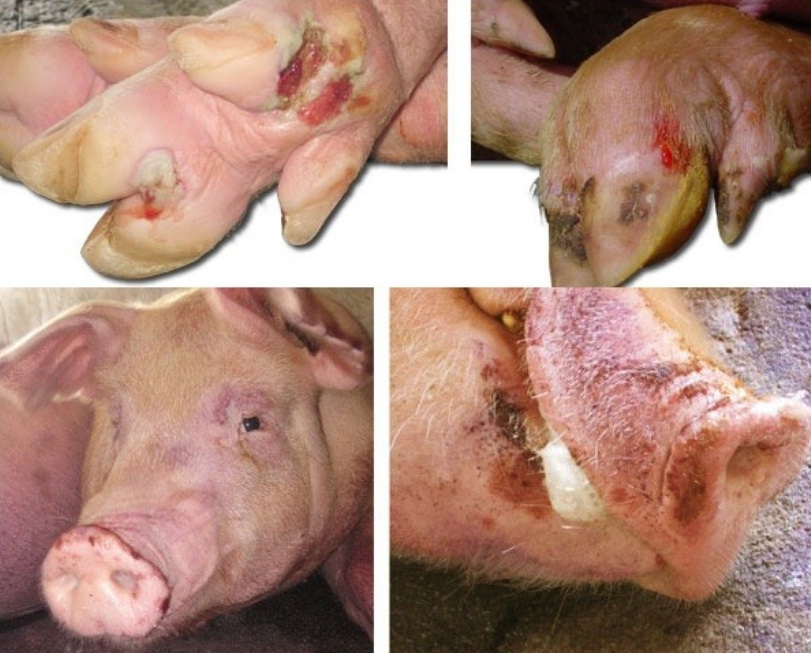

Parallel (OR) testing raises sensitivity and lowers specificity. Serial (AND) testing raises specificity and lowers sensitivity.
One test is often not enough. Two tests can be combined in two ways. The way you combine them changes sensitivity, specificity and the type of error you make.
Serial testing · AND rule
Tests are done one after another. A later test is done only if the earlier test is positive.
Parallel testing · OR rule
Two or more tests are done at the same time, or around the same time.
For two tests, A and B, that make errors independently of each other:
| Serial (AND) | Parallel (OR) | |
|---|---|---|
| Combined sensitivity | SeA × SeB | 1 − (1 − SeA) × (1 − SeB) |
| Combined specificity | 1 − (1 − SpA) × (1 − SpB) | SpA × SpB |
| Why | An infected animal must test positive on both tests. A healthy animal is wrongly called positive only if both tests give a false positive. | An infected animal is missed only if both tests are false negative. A healthy animal must test negative on both tests. |
| Example A: Se 90%, Sp 95% B: Se 80%, Sp 98% | Se = 0.90 × 0.80 = 72.0% Sp = 1 − (0.05 × 0.02) = 99.9% | Se = 1 − (0.10 × 0.20) = 98.0% Sp = 0.95 × 0.98 = 93.1% |
Check the pattern. Serial testing lowers sensitivity (90% and 80% become 72%) and raises specificity (95% and 98% become 99.9%). Parallel testing does the opposite. These formulas assume the two tests make errors independently. If they share errors, for example because both react to the same antibody, the real values are less favourable.
Task 5.1 shows how to calculate the combined sensitivity and specificity for each rule.
| Strategy | Sensitivity | Specificity | PPV (at 1% prevalence) | NPV (at 1% prevalence) |
|---|
The WOAH serosurveillance algorithm for FMD is serial. In a vaccinated population an NSP 3ABC ELISA screens, positives get an NSP confirmatory test, and follow-up decides infected or not. A negative at either step stops the pathway. Test A and B come from Task 5.1. Prevalence is 1%. Numbers are hypothetical.
Scenario. You are a veterinary officer in East Java, Indonesia. You receive a report of pigs showing clinical signs suspected to be associated with foot-and-mouth disease (FMD). You visit the farm and collect appropriate samples from the suspected animals. You now need to confirm whether the animals are infected with FMD virus using diagnostic testing.

Presentation. Answer these questions in your presentation. Show the tests you chose and why, the rule you used (parallel or serial) and why, and the combined sensitivity and specificity with your calculation.